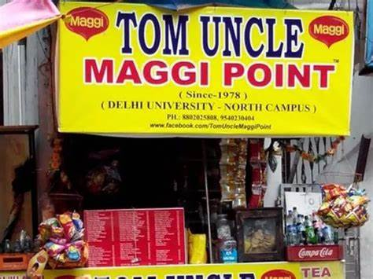
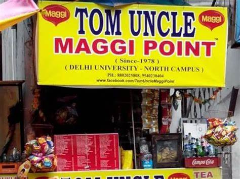
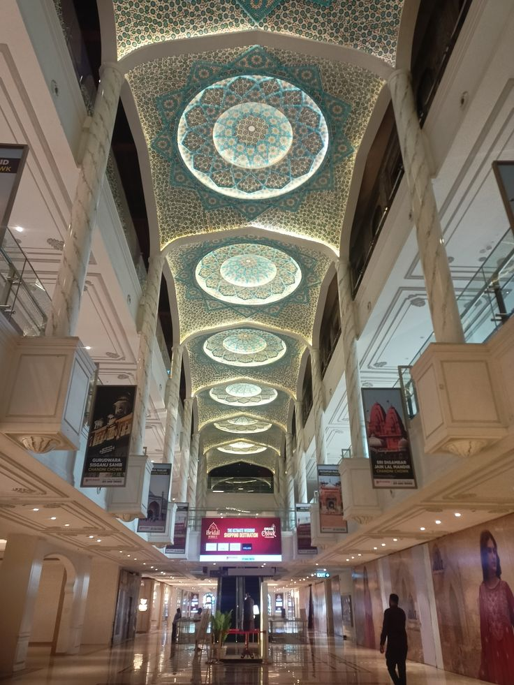
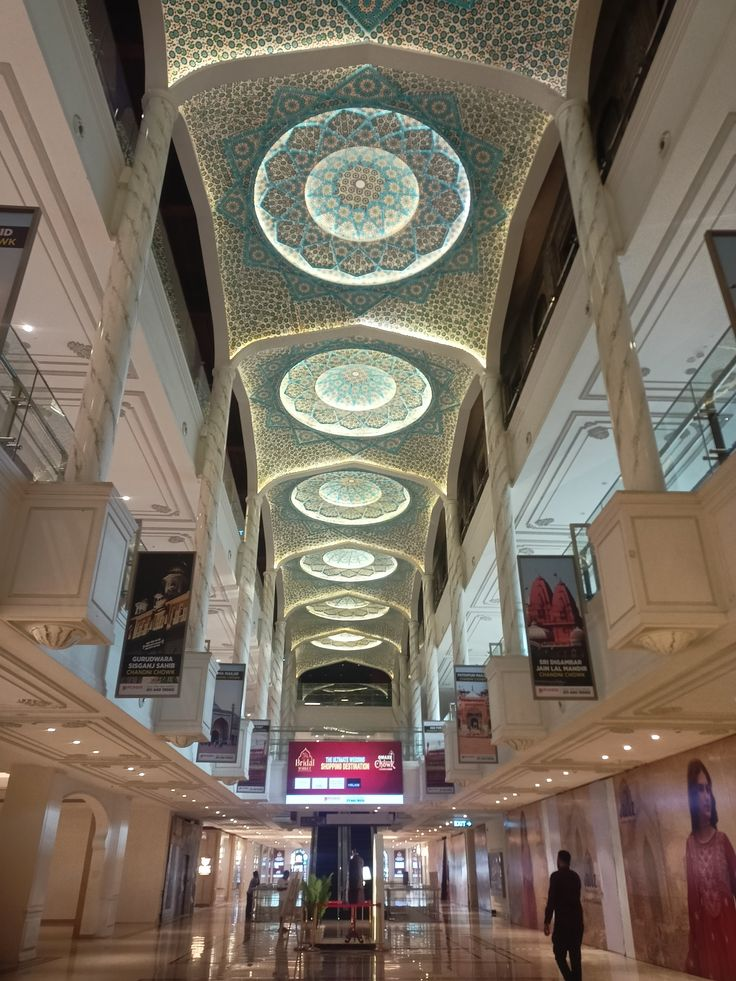
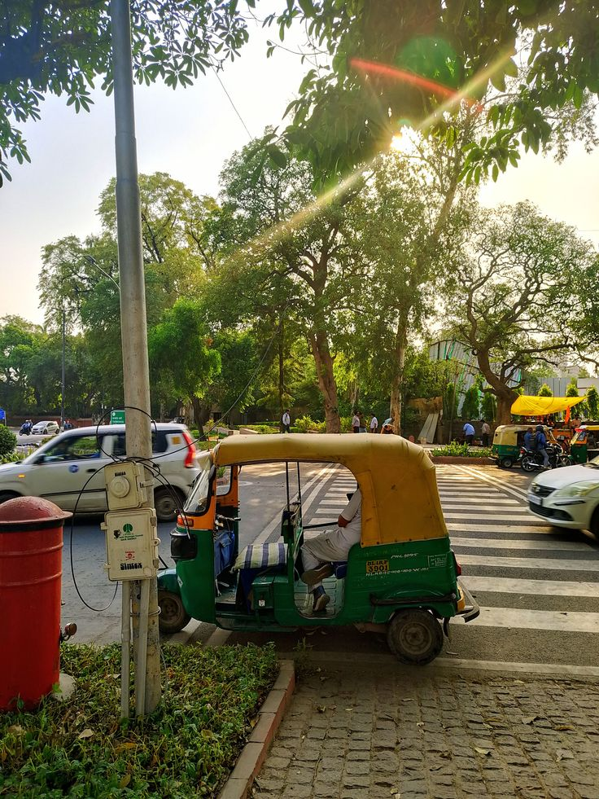
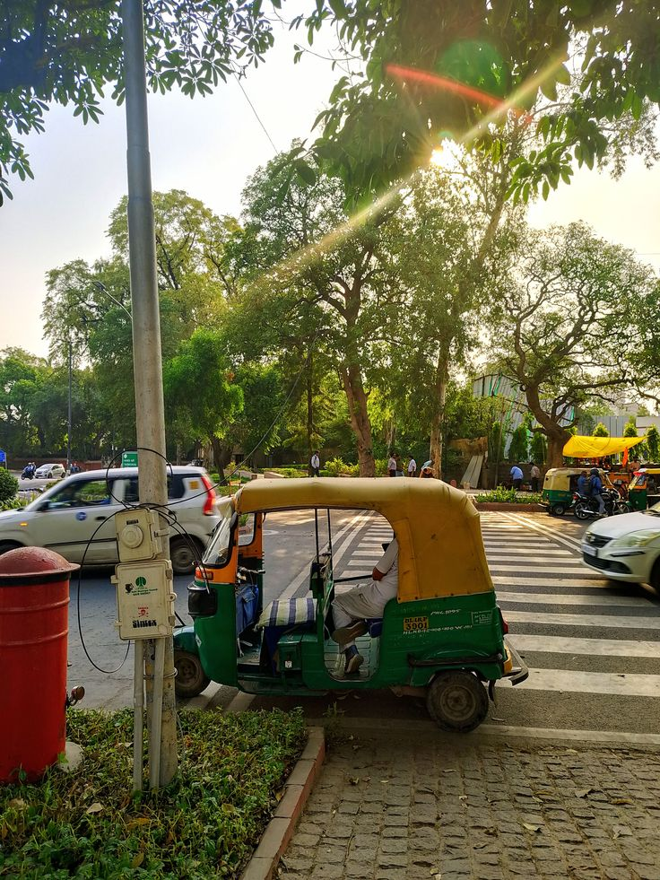

Student Picks: Cafés & Hangouts
Because some vibes just can’t be Googled. Here’s where IGDTUW girls really chill!
🍔 Food & Chill Spots
Kashmere Gate Metro Outlets
McDonald's, Burger King, Chaayos, Dosa Planet, Zudio & more — all just a few mins' walk from college.
📍 Distance: ~3 km (10 min via metro)
🔗 View on MapMajnu Ka Tila (Ama Café, Norwang)
Tibetan cafés, momo stalls & pancakes with serene riverside vibes. Aesthetic spots for food & photos!
📍 Distance: ~6 km (18–20 min via metro)
🔗 View on MapConnaught Place (CP)
Whether it's a chill evening or a fest celebration, CP is where IGDTUW girls always find their vibe. From iconic street food like Jain Chawal Wale and hot kachoris near Janpath to Wenger's — Delhi's oldest bakery — and aesthetic cafés tucked in every block, this place is a whole experience.
📍 Distance: ~7 km (25 min via Metro from Kashmere Gate)
🔗 View on Map 

Sudama Chai & Vibes
More than just chai — it’s the heart of North Campus street food. Right around the corner you'll find iconic spots like Dolma Aunty Momos and Tom Uncle Maggie Point. Pure DU girl energy.
📍 Distance: ~5–6 km (20 min)
🔗 View on mapHauz Khas Cafés
From the floral vibes of The Pink Room to the artsy chaos of Social and cozy corners at Elma’s — these cafés are a whole mood after fort walks and lake views.
📍 Distance: ~12–13 km (35–40 min via metro)
🔗 Pink Room | Social | Elma’sCivil Lines Cafés & Snacks
Close to campus and full of chill — SOCIAL and Cling are IGDTUW favs. Don’t miss Fateh Chand ki Kachori for the ultimate Delhi breakfast win.
📍 Distance: ~4–5 km (15–20 min auto)
🔗Social Civil lines | Cling | Fateh Chand KachoriChandni Chowk Food Trail
A must-do for every IGDTUW foodie! From the legendary Paranthe Wali Galli to Giani di Hatti’s rabri falooda, Daulat ki Chaat, and iconic matar kulchas & kachoris — this street serves stories, not just snacks.
📍 Distance: ~3.5 km (10–15 min auto or metro to Chandni Chowk)
🔗 View on MapChampa Gali, Saket
Aesthetic lanes, fairy lights, indie cafés, and Delhi’s softest vibe corner. Champa Gali is far but totally worth it for IGDTUW girls chasing quiet, creativity & killer coffee.
📍 Distance: ~18 km (45–50 min via metro to Saket + walk)
🔗 View on Map 

 
